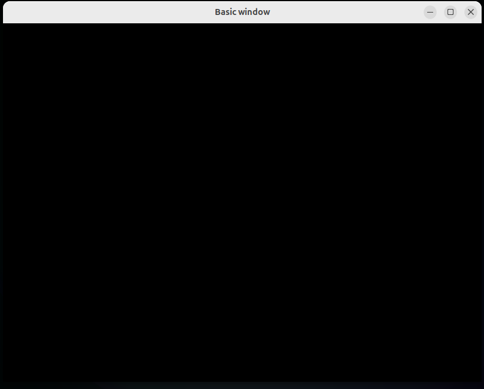

00_INTRODUCTION
OpenGL is a cross-language, cross-platform API for rendering in 2D and 3D. In this article series I want to show how to write a C++ program that renders whtever we want by using OpenGL, starting from creating a simple window and receiving inputs.
01_ABSTRACT
I'll mainly go through the book "Learn OpenGL: Graphics Programming". The book has a clear and logical structure, and can help a beginner go from nothing to rendering all kinds of things, working with textures, lighting and shading, and much more. I'll also add some details here and there to create a fuller picture of the state of OpenGL.
02_CREATING_A_WINDOW
Initial Setup
Before we start to render, we have to create a place to draw, a window. The library we are going to use for windows and handling inputs is GLFW. First we need to set up GLFW before creating a window.
glfwInit(); // initialize GLFW
// specify which OpenGL version to use
glfwWindowHint(GLFW_CONTEXT_VERSION_MAJOR, 4); // version 4.x
glfwWindowHint(GLFW_CONTEXT_VERSION_MINOR, 5); // version x.5
glfwWindowHint(GLFW_OPENGL_PROFILE, GLFW_OPENGL_CORE_PROFILE);
The GLFW OpenGL profile is used to manage the availability of legacy functionality. The Core Profile removes deprecated fixed-function pipeline features to enforce modern shader-based rendering. Another option is the Compatibility Profile, which retains backward compatibility.
Window Creation
GLFWwindow* window = glfwCreateWindow(
800, // width
600, // height
"Basic window", // window title
nullptr, // monitor for fullscreen mode, or nullptr for windowed mode
nullptr // window whose context to share resources with
);
if (window == nullptr) {
// window creation failed
glfwTerminate();
return -1;
}
glfwMakeContextCurrent(window);
GLAD Initialization
There are many diferent versions of OpenGL drivers due to hardware specifics, so the locations of most of the functions are not known. The purpose of GLAD is to manage these locations.
if (!gladLoadGL(glfwGetProcAddress)) {
// couldn't initialize GLAD
return -1;
}
Rendering Window Size
We set the initial window size, but we have done nothing to tell OpenGL about where to render. We might want a slight border, or render on the whole window.
// function called by GLFW to resize the render area after window resizing
void framebuffer_size_callback(GLFWwindow* window, int width, int height) {
glViewport(0, 0, width, height);
}
glViewport(
0, 0, // bottom left corner of the render window
800, 600 // width & height of the render window
);
// specify what to call on window resize
glfwSetFramebufferSizeCallback(window, framebuffer_size_callback);
Render Loop & Double Buffer
The most important place where most of the rendering happens is in the render loop. There we render (duh), and process inputs.
while (!glfwWindowShouldClose(window)) {
// do stuff & render them...
glfwSwapBuffers(window); // swap buffers (displays newly rendered frame)
glfwPollEvents(); // process inputs
}
glfwTerminate(); // destroys remaining windows, frees resources
return 0;
The rendering on the screen works the following way:
- Display the current image on the front buffer, while drawing on the back buffer.
- Once done, swap the front and back buffer.
- Go back to 1. and repeat the process.

03_INPUTS
We have 3 functions for processing pending events:
// processes only already received events and returns imediately
glfwPollEvents();
// thread waits until a new input is received
glfwWaitEvents();
// thread waits until a new input is received or t seconds pass
glfwWaitEventsTimeout(t);
Each input-processing function has its uses:
glfwPollEventsis useful when we need to continue rendering even if there is no input (exmple: games, simulations).glfwWaitEventscuts down on CPU cycles and is used when we know what is rendered shouldn't change if there is no input.glfwWaitEventsTimeoutis used when we want to save on CPU cycles but still need the occasional redrawing of the frame.
If we really want to use glfwWaitEvents but want to render at specific moments, we can use:
// posts an empty event to wake up glfwWaitEvents()
glfwPostEmptyEvent();
Keyboard
We can specify what we do on specific keyboard inputs. We can specify the heyboard key, the key action (press, release, hold).
void key_callback(GLFWwindow* window, int key, int scancode, int action, int mods) {
if (key == GLFW_KEY_E && action == GLFW_PRESS)
// do something when E is pressed
}
// in main()
glfwSetKeyCallback(window, key_callback);
There are other ways to get keyboard inputs, but they have their quirks and dangers. The last reported state of keys is stored in per-window state arrays and it can be retrieved.
// get last state of the key E
int state = glfwGetKey(window, GLFW_KEY_E);
if (state == GLFW_PRESS) {
// do something
}
glfwGetKey can return GLFW_PRESS or GLFW_RELEASE,
which is unwanted if we want to act on a key press and not release.
// make it so that GLFW_PRESS is stored only after the key is released
// then we don't have to worry about glfwGetKey returning GLFW_RELEASE
glfwSetInputMode(window, GLFW_STICKY_KEYS, GLFW_TRUE);
Of course, glfwSetInputMode isn't limited only to the keyboard.
It gives us many modes for mouse inputs as well.
Mouse
The available mouse modes are:
GLFW_CURSORhas 3 modes:GLFW_CURSOR_NORMALmakes the cursor visible and behaving normal,GLFW_CURSOR_HIDDENhides the cursor, but it can leave the window,GLFW_CURSOR_DISABLEDhides and locks the cursor and is useful for 3D camera controls.GLFW_STICKY_MOUSE_BUTTONSis analogous toGLFW_STICKY_KEYS.GLFW_RAW_MOUSE_MOTIONcan allow for unscaled and unaccelerated mouse motion.
Getting the cursor position is similar to what we do for keyboard inputs.
static void cursor_position_callback(GLFWwindow* window, double xpos, double ypos) {
// do something
}
// in main()
glfwSetCursorPosCallback(window, cursor_position_callback);
// OR poll the per-window stored cursor positon
double xpos, ypos;
glfwGetCursorPos(window, &xpos, &ypos);
GLFW even allows us to costumize the cursor.
Text Input
Text input differs from normal keyboard input by the fact that it is affected by keyboard layouts and modifier keys.
void character_callback(GLFWwindow* window, unsigned int codepoint) {
// do something
}
// in main()
glfwSetCharCallback(window, character_callback);
Other Inputs
GLFW isn't limited only to receiving inputs from mice and keyboards. It can work with joysticks gamepads, time, and clipboard. For more info you can check GLFW's documentation here: GLFW Input Guide.